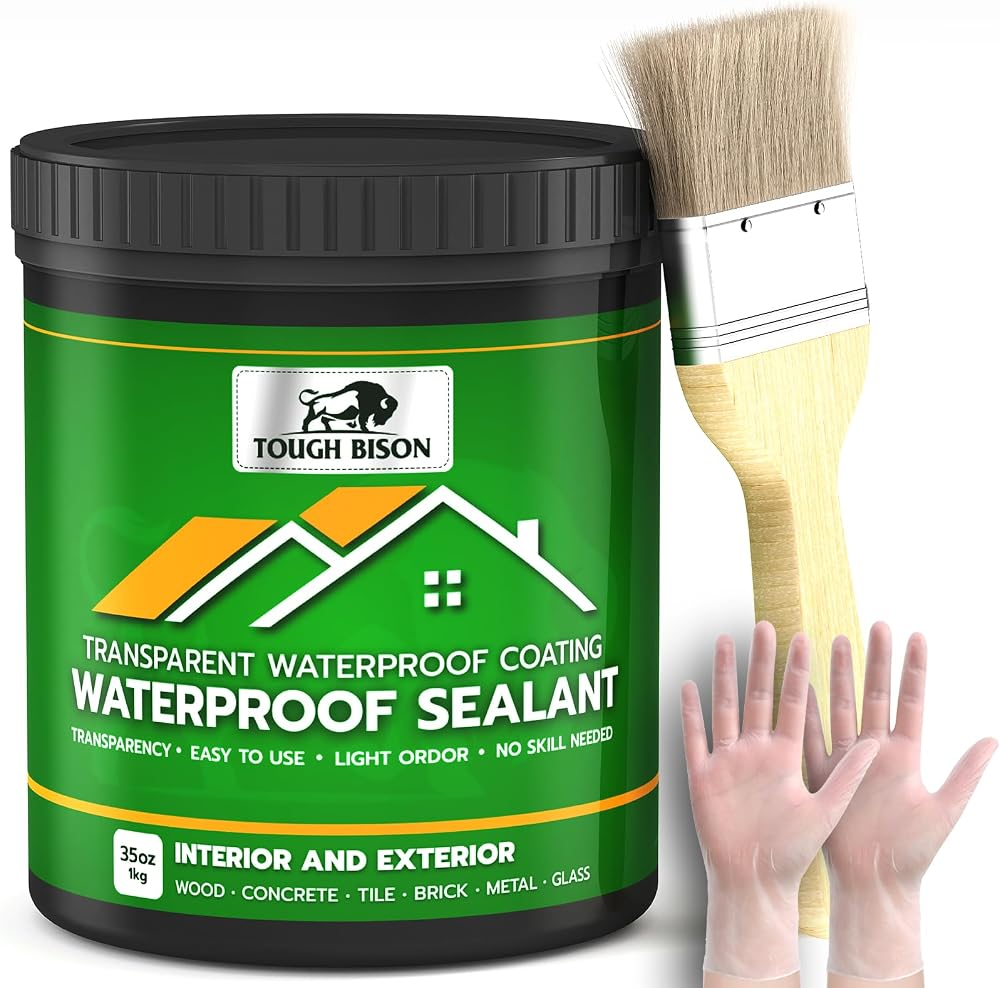

How to Seal Painted Rocks for Outdoors
A step-by-step guide from Tough Bison: drying time, coats, brush-on vs spray, matte vs gloss, and how to fix the usual problems.
Short answer
Let the paint dry completely, then brush on 2 to 3 thin coats of a clear sealer made for outdoor use, waiting 2 to 4 hours between coats. Let the last coat cure (about 48 hours in dry weather for Tough Bison Clear Sealer) before the rock goes outside.
What you need
- Painted rocks with the paint fully dry
- A clear sealer made for outdoor use
- A soft brush or foam sponge (Tough Bison includes a brush and gloves in each jar)
- A dry, covered spot to let the rocks dry, ideally between 41°F and 95°F (5°C to 35°C)
- Something to rest the rocks on while they dry, like wax paper or a plastic lid
Step by step
- Start with a clean rock. Dust and dirt under the paint are the most common reason paint lifts later. Wash and dry rocks before you paint them.
- Let the paint dry fully. Dry to the touch is not enough, especially for thick paint, layered dots and paint pens. If in doubt, wait overnight.
- Test over paint pens first. Ink from water-based paint pens can smudge when a brush passes over it. Try the sealer on the back of one rock, and use light strokes or dab it on rather than scrubbing.
- Brush on a thin first coat. Cover the painted area and a little past the edges. With Tough Bison it goes on milky and dries clear.
- Let it dry 2 to 4 hours, then add the next coat. Use 2 to 3 thin coats in total. Thin coats dry clearer and harder than one thick coat.
- Seal the bottom too if the rock will sit on soil or grass, so moisture does not creep in from underneath.
- Let it cure before it goes outside. About 48 hours in dry conditions; longer in humid weather. Keep it away from rain and sprinklers until then.
Choosing a sealer
| Choice | What to know |
|---|---|
| Brush-on vs spray | Spray sealers are quick and good on very fine detail, but need ventilation and give overspray. Brush-on sealers build a thicker layer per coat, can be used indoors and let you control exactly where the sealer goes. |
| Matte vs gloss | Gloss makes colors look deeper and wet. Matte keeps the look of the paint and does not shine or glare in the sun. Tough Bison is matte. |
| Outdoor rating | Choose a sealer that says it is for outdoor use. Some craft finishes are made for indoor projects and turn soft or tacky in rain. |
| Yellowing | Some clear coats can yellow over time, which shows on white and light colors. Tough Bison dries clear and does not yellow. |
Fixing common problems
- Cloudy or milky finish. The coat was too thick or has not finished drying, usually because of humidity. Move the rock somewhere dry and give it time; use thinner coats next time.
- Tacky or sticky surface. It has not cured yet. Do not stack rocks or let them touch until cured.
- Smeared paint pen lines. The ink was not dry, or the brush scrubbed it. Wait longer before sealing and dab the first coat on.
- Brush marks. Use a softer brush or foam sponge, thinner coats, and fewer strokes per coat.
- Finish looks worn after a season outside. Clean and dry the rock, then brush on a fresh coat.
Where not to put sealed rocks
Tough Bison Clear Sealer handles rain and splashes, but it is not made for surfaces kept underwater. Do not use it for rocks that will sit in a pond, fish tank, fountain basin or inside a bird bath bowl. It is also a protective coat that holds up to sun, not a UV-filtering coating.
The sealer we make

Tough Bison Clear Sealer for Acrylic Paint: a brush-on, water-based pure acrylic top coat. Matte, dries clear, does not yellow, low VOC and cleans up with water. Works over acrylic, latex and chalk paint. 35 oz (1 kg) jar, up to 14 sq ft, with a brush and 2 gloves.
$23.10 on Amazon.com (November 2026). Sold by the brand only on Amazon.com.
Questions
Do painted rocks need to be sealed?
Yes, if they will live outside or be handled a lot. Acrylic craft paint on its own wears, fades and scuffs in rain, sun and dirt. A clear top coat protects the paint layer.
How long should acrylic paint dry before sealing a rock?
Until it is fully dry all the way through, not just dry to the touch. Thin layers are often ready within a few hours; thick paint, paint pens and humid weather need longer. If in doubt, wait overnight.
How many coats of sealer do painted rocks need?
With Tough Bison Clear Sealer, 2 to 3 thin coats, 2 to 4 hours apart.
How long before a sealed rock can go outside?
About 48 hours in dry conditions for Tough Bison Clear Sealer. Allow longer in humid weather, and keep it out of rain and sprinklers until cured.
Why is my sealer cloudy or milky?
Water-based acrylic sealers go on milky and turn clear as they dry. If it stays milky, the coat is too thick or still drying. Give it time in a dry place and use thinner coats.
Can sealed painted rocks go in a pond, fish tank or bird bath?
Not with Tough Bison Clear Sealer. It handles rain and splashes but is not made for surfaces kept underwater.
Can I paint over the sealer later?
Yes, after it has fully cured.